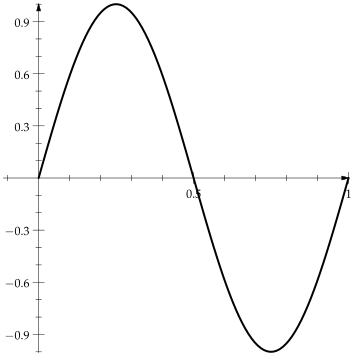
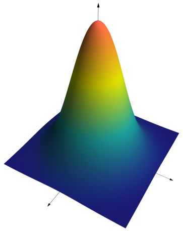
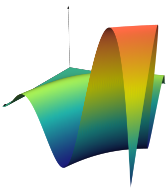

Graphing Functions
AsyPlots.plot — Function.plot(x,y;kwargs...)
plot(y;kwargs...)Return a graph of the path with $x$ and $y$ values given by x and y
x defaults to 0:length(y)-1. kwargs are applied to the Path2D object representing the line or to the containing Plot2D, as appropriate
plot(xs::Vector{<:Vector{<:Real}},
ys::Vector{<:Vector{<:Real}};
kwargs...)Multiple line graphs in the same figure
plot(x,y,z;kwargs...)
plot(z::Array{<:Real,2};kwargs...)A graph of the surface with $x$, $y$, and $z$ values x, y, and z
x defaults to [i-1 for i=1:size(z,1),j=1:size(z,2)] and y defaults to [j-1 for i=1:size(z,1),j=1:size(z,2)]
Examples
plot(cumsum(randn(100)))
plot(rand(5,5))plot(x->sin(2π*x),(0,1),linewidth=2,axisarrow=Arrow())
plot((x,y)->exp(-x^2-y^2),(-2,2),(-2,2),xmax=2.5,ymax=2.5,zmax=1.1)
using SymPy
@vars x y
plot(x*y*sin(x*y/4),(x,0,2π),(y,0,2π))